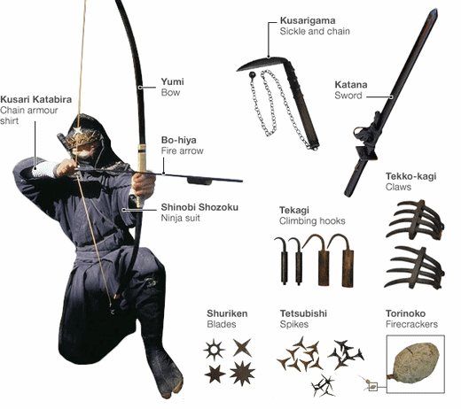
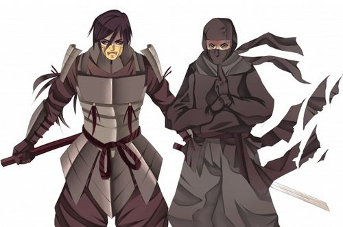
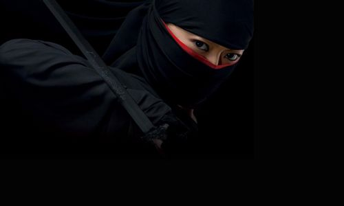

Veja algumas curiosidades sobre os ninjas.
Os ninjas usavam armas como shuriken, tesubishi, tekagi, kusarigama, arco e flecha, tekko kagi, tesubishi, torinoko (bomba de fumaça). Eles também eram habilidosos espadachins. Eles usaram suas armas não apenas para matar, mas também para escalar paredes de pedra, como o “ashiko” (garras usadas nas botas), mas que também era usado para dar chutes mortais.
O Shuriken (estrelas de arremesso), um dos arsenais mais famosos nos ninjas, não tinha o propósito de matar, embora funcionasse como uma arma letal. O objetivo principal era somente persuadir ou no máximo ferir o inimigo.
Veja algumas das armas: 
Os dois fazem parte da história do Japão feudal, porém os samurais eram nobres que seguiram o código de honra Bushido enquanto que os ninjas faziam parte de uma classe econômica mais baixa. Os samurais normalmente eram leais ao imperador enquanto que os ninjas poderiam ser contratados por qualquer pessoa que precisasse e que pagasse por seus serviços. 
Pouca gente sabe, mas havia muitas mulheres treinadas na arte do ninjutsu. Eram chamadas de “kunoichi”, e de acordo com o livro “O Ninja e sua arte de luta secreto”, elas se disfarçavam geralmente como bailarinas ou artistas e poderiam até seduzir seus alvos para obter informações. 
Nota: a logomarca foi retirada do site da empresa PrintNinja.com, uma gráfica especializada em impressão de revistas em quadrinhos.